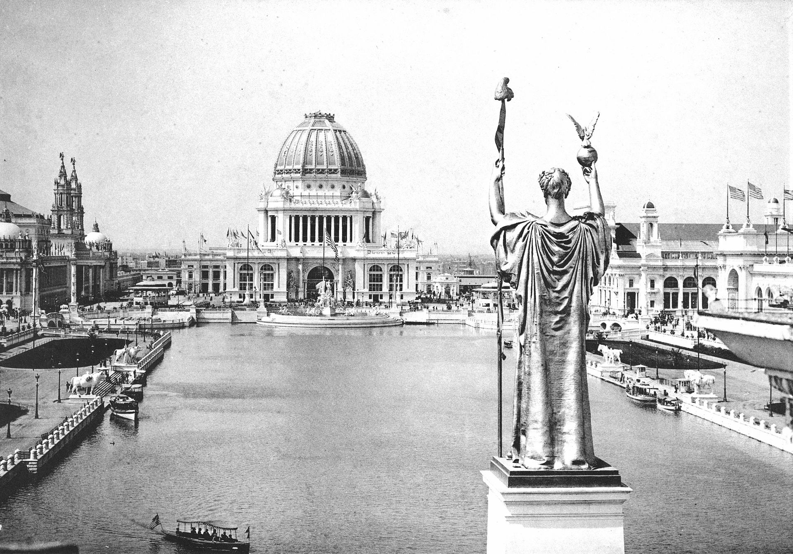

World's Columbian Exposition
The World's Columbian Exposition, also known as the Chicago World's Fair, was a world's fair held in Chicago from May 5 to October 31, 1893, to celebrate the 400th anniversary of Christopher Columbus's arrival in the New World in 1492. The centerpiece of the Fair, held in Jackson Park, was a large water pool representing the voyage that Columbus took to the New World.
